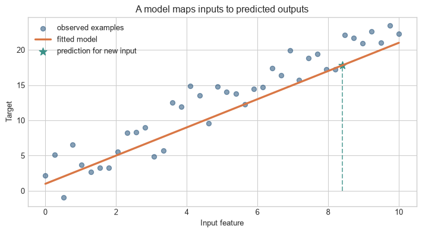
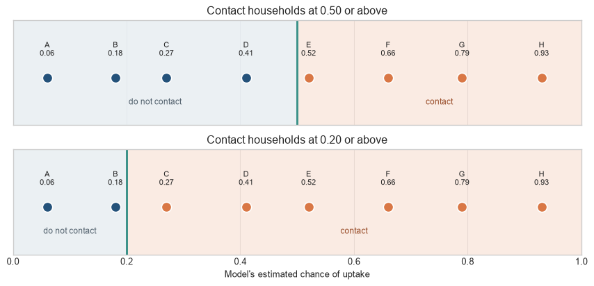
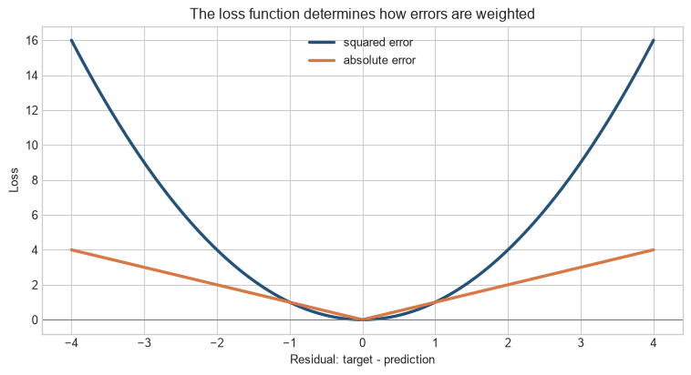
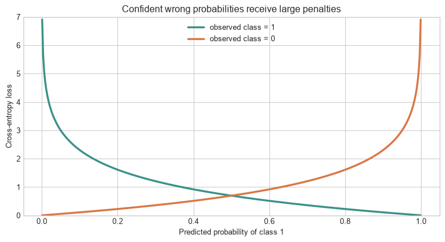

Let’s return to the outreach programme. We have earlier households for which we now know the result of contact, and we are trying to build a rule that will help with the next round. Two possible rules give different estimates for the same household. One says that a household has a 30 per cent chance of taking up the programme; another says 70 per cent. Which rule should we keep?
The answer cannot be based on one household alone. We need to look across many earlier cases, compare each rule’s estimates with what actually happened, and decide which rule has made the smaller mistakes overall. This chapter introduces the device used for that comparison: a loss.
From an estimate to a score
For each earlier household, there are two relevant pieces of information. There is the outcome that was eventually observed, and there is the estimate made by the rule. A loss is a way of turning the gap between them into a number. Small gaps receive small penalties; larger gaps receive larger ones. Adding or averaging those penalties across the earlier households gives a score for the rule.
The word loss is just a name for this score. It gives the training procedure a concrete instruction: prefer the version of the rule that makes smaller errors on the examples used for training.
Level 1 - Intuition
Before returning to yes/no uptake, it helps to see prediction error in a simple picture. Each blue point is an earlier case with a recorded outcome. The orange line is one possible rule. At any input value, the line gives the rule’s prediction; the vertical gap to the point shows how far that prediction was from what happened. The next task is to combine those gaps so that two possible rules can be compared.
Code
import numpy as npimport matplotlib.pyplot as pltplt.style.use("seaborn-v0_8-whitegrid")blue, teal, orange, purple ="#24527a", "#3a9188", "#d97745", "#7655a6"rng = np.random.default_rng(21)x = np.linspace(0, 10, 40)y =1.5+2.2* x + rng.normal(0, 2.0, len(x))w, b =2.0, 1.0predictions = w * x + bfig, ax = plt.subplots(figsize=(7.5, 4.2))ax.scatter(x, y, color=blue, alpha=0.55, label="observed examples")ax.plot(x, predictions, color=orange, linewidth=2.5, label="fitted model")new_x, new_y =8.4, w *8.4+ bax.scatter([new_x], [new_y], color=teal, s=100, marker="*", label="prediction for new input")ax.vlines(new_x, 0, new_y, color=teal, linestyle="--", alpha=0.7)ax.set(xlabel="Input feature", ylabel="Target", title="A model maps inputs to predicted outputs")ax.legend(frameon=False)plt.tight_layout()plt.show()

Figure 3.1: A fitted line is a model: it maps an input value to a prediction.
The line is one candidate rule for turning an input into an output. It does not pass through every point, so it makes a different error for each earlier case. A model is not chosen because it looks plausible on a chart. It is chosen because a stated way of scoring those errors judges it better than the alternatives.
A rule has a form and fitted values
The programme might choose a straight-line rule, a decision tree, or a neural network. This choice fixes the broad form of the rule. The numbers inside that form are then adjusted using the earlier cases. A straight-line rule, for example, needs a number that says how much each input matters. Those adjustable numbers are called parameters.
Two rules can have the same form and still give different answers because their parameters differ. Training is the process of changing those parameters until the rule makes smaller errors on the training cases.
A loss gives mistakes a common scale
Each earlier case produces one prediction and one observed outcome. A loss converts the difference between them into a penalty. For a numerical outcome, a prediction that is two units away usually receives a larger penalty than one that is half a unit away. Once every case has a penalty, the training procedure can add or average them and compare one version of the rule with another.
There is more than one way to do this. Squared error makes large numerical misses count heavily. Absolute error treats differences more evenly. A probability model uses a different loss because saying “almost certainly” when the opposite outcome occurs should be penalised sharply. We will build these losses one at a time; for now, loss means the scoring rule used to decide which fitted version of a model is preferred.
Model, prediction, target, and loss. A model is a rule that turns available information into an estimate. A prediction is the estimate; the target is the outcome later observed in an earlier case. A loss scores the difference between them so that candidate rules can be compared.
A baseline is a claim about added value
Before keeping a complicated rule, compare it with a simple one. For a numerical outcome, the baseline might predict the same average value for every case. For uptake, it might predict the overall uptake rate for every household. A learned rule earns its added complexity only if it improves on this simple comparison when tested on cases it did not see during training.
A probability is not yet an action
For a yes/no outcome, the model may return a probability. Imagine that it has assigned probabilities to eight households. The programme must still decide where to draw the line. It might contact only households with an estimated chance of at least 0.5, or it might contact everyone above 0.2 if it has more capacity. The estimates for each household stay the same; only the contact rule changes.
Read the two rows of the figure as two decisions made using the same eight probabilities. In the upper row, only households to the right of 0.5 are contacted. In the lower row, the line moves to 0.2, so additional households are contacted. The blue and orange colours describe the action taken by the programme, not a change in the model.
Code
probability_examples=np.array([.06,.18,.27,.41,.52,.66,.79,.93])households=list("ABCDEFGH")fig,axes=plt.subplots(2,1,figsize=(9,4.4),sharex=True)for ax,threshold,title inzip(axes,[.5,.2],["Contact households at 0.50 or above","Contact households at 0.20 or above"]): contact=probability_examples>=threshold ax.axvspan(0,threshold,color="#e8eef2",alpha=.85) ax.axvspan(threshold,1,color="#f8e1d5",alpha=.65) ax.axvline(threshold,color=teal,linewidth=2.2)for household,probability,chosen inzip(households,probability_examples,contact): colour=orange if chosen else blue ax.scatter(probability,0,s=115,color=colour,edgecolor="white",linewidth=1.2,zorder=3) ax.text(probability,0.20,f"{household}\n{probability:.2f}",ha="center",va="bottom",fontsize=8) ax.text(threshold/2,-.27,"do not contact",ha="center",color="#52616d",fontsize=9) ax.text((threshold+1)/2,-.27,"contact",ha="center",color="#9a4f2c",fontsize=9) ax.set(title=title,ylim=(-.48,.58),yticks=[])axes[-1].set(xlabel="Model's estimated chance of uptake",xlim=(0,1))plt.tight_layout(); plt.show()

Figure 3.2: The same eight estimated probabilities produce different contact lists when the programme changes its threshold.
The figure does not tell us which threshold is right. That choice depends on capacity and on the consequences of contacting a household unnecessarily or failing to contact one that would have taken up the programme. The immediate question for training comes earlier: how should the rule be scored across all the earlier households? Level 2 follows that calculation from one error to a batch-wide loss.
Figure 3.3: A loss assigns a penalty to each prediction error and aggregates those penalties.
The vertical segments represent individual residuals. The loss function converts each residual into a penalty and then combines the penalties into one number. The model cannot improve a parameter until the training procedure can compare the total error produced by different parameter values.
One batch creates a vector of errors before one scalar loss
Models normally make many predictions in one batch. The loss is not a mysterious scalar emitted by a framework: it begins with one comparison per observation, then applies a reduction such as a mean or sum. A mean makes the reported scale less sensitive to batch size; a sum gives larger batches more total influence unless another part of the update rule compensates.
The calculation makes the reduction convention explicit. In standard mini-batch training, changing mean to sum without changing the learning-rate convention changes the scale of the gradient passed to the optimiser. Chapter 3 develops that update step; this chapter establishes the quantity being reduced.
Regression
Regression predicts a quantity on a numerical scale. The simplest model is:
\[
\hat y=w_1x_1+w_2x_2+\cdots+w_px_p+b.
\]
The weight \(w_j\) controls the contribution of feature \(x_j\) within the model. The intercept \(b\) is the prediction when all features equal zero, although that interpretation may not be substantively meaningful if zero is outside the observed data range.
The square makes the loss non-negative and gives larger residuals greater influence. This is useful when large errors are particularly undesirable, but it also makes MSE sensitive to outliers.
Classification
Binary classification predicts one of two classes. A linear score can be converted to a probability with the logistic function:
The probability is then converted into a decision using a threshold. The threshold is a decision rule, not usually a learned parameter of the basic model. Altering it changes the confusion matrix even when the model and probabilities remain unchanged.
Cross-entropy
For a binary target \(y_i\in\{0,1\}\) and predicted probability \(p_i\), binary cross-entropy is:
If \(y_i=1\), the loss is \(-\log(p_i)\): confident predictions near one receive low loss, while confident predictions near zero receive a large penalty. If \(y_i=0\), the second term plays the same role. Cross-entropy therefore evaluates probability assignments, not only the final class decision.
Training loss and evaluation loss
The training objective is calculated on the data used to fit parameters. Evaluation metrics are calculated on held-out data or in a deployment setting. The same loss can be reported in both places, but the interpretation differs. A low training loss shows that the model fitted the training examples. A low held-out loss provides evidence that the fitted relationship extends to new cases drawn from the evaluation population.
Loss and metric can therefore coincide without being interchangeable. A binary classifier may train with cross-entropy, monitor held-out cross-entropy to assess probability quality, and also report recall at an operational threshold. Each quantity answers a different question. Replacing one with another because it produces a more favourable number changes the claim being made.
The mechanics identify the job of the loss: reduce a batch of prediction errors to one quantity that can be compared across candidate models. The mathematics and code below make that reduction explicit for regression and classification.
Level 3 - Mathematics & Code
The purpose of this level is to connect the verbal distinction between model, prediction, target, and loss to calculations that can be checked. We begin with a small regression example, then compare different loss functions and use a baseline to assess whether the fitted model adds predictive information.
A small regression problem
Code
import numpy as npimport matplotlib.pyplot as pltplt.style.use("seaborn-v0_8-whitegrid")blue, teal, orange ="#24527a", "#3a9188", "#d97745"rng = np.random.default_rng(21)x = np.linspace(0, 10, 40)y =1.5+2.2* x + rng.normal(0, 2.0, len(x))w, b =2.0, 1.0predictions = w * x + bmse = np.mean((predictions - y) **2)print(f"MSE: {mse:.2f}")
MSE: 7.31
The model’s predictions can be written as a vector operation:
\[
\hat{\mathbf y}=Xw+b,
\]
where \(X\) is the matrix of features, \(w\) is the vector of weights, and \(b\) is broadcast across observations. This notation becomes essential when the same operations are applied to a batch of examples on a GPU.
The vector notation is the batch version of the scalar equation introduced in Chapter 1. Each row of \(X\) represents one observation. Multiplying \(X\) by \(w\) produces one model score for each row, and adding \(b\) shifts every score by the same amount. The code above performs these operations directly with the chosen values of \(w\) and \(b\); the plot below makes the resulting predictions and residuals visible.
Figure 3.4: A linear model summarises a relationship while leaving residual variation unexplained.
Loss as a function of the parameter
For a fixed dataset, changing \(w\) changes the predictions and therefore the loss. In a one-parameter example, we can plot that relationship directly. With many parameters, the same object becomes a high-dimensional surface. Chapter 3 explains how gradient descent uses local derivatives of this surface.
Code
residual = np.linspace(-4, 4, 400)fig, ax = plt.subplots(figsize=(8, 4.4))ax.plot(residual, residual **2, color=blue, linewidth=2.5, label="squared error")ax.plot(residual, np.abs(residual), color=orange, linewidth=2.5, label="absolute error")ax.axhline(0, color="#777777", linewidth=0.8)ax.set(xlabel="Residual: target - prediction", ylabel="Loss", title="The loss function determines how errors are weighted")ax.legend(frameon=False)plt.tight_layout()plt.show()

Figure 3.5: Squared error and absolute error penalise residuals differently.
Numerical cross-entropy
Code
probabilities = np.linspace(0.001, 0.999, 400)loss_if_positive =-np.log(probabilities)loss_if_negative =-np.log(1- probabilities)fig, ax = plt.subplots(figsize=(8, 4.4))ax.plot(probabilities, loss_if_positive, color=teal, linewidth=2.5, label="observed class = 1")ax.plot(probabilities, loss_if_negative, color=orange, linewidth=2.5, label="observed class = 0")ax.set(xlabel="Predicted probability of class 1", ylabel="Cross-entropy loss", title="Confident wrong probabilities receive large penalties")ax.set_ylim(0, 7)ax.legend(frameon=False)plt.tight_layout()plt.show()

The graph also explains why numerical implementations use a small positive constant or stable log-sum-exp operations. Evaluating \(\log(0)\) is undefined, and extreme logits can create overflow if the expression is implemented naively.
The important point is that cross-entropy distinguishes a correct prediction from a well-calibrated probability. Assigning probability 0.51 to the observed class and assigning probability 0.99 both lead to the same class decision, but they receive different losses. The second prediction is rewarded more when it is correct and penalised more severely when it is wrong.
Frameworks commonly accept logits rather than already rounded probabilities because a combined loss implementation can calculate the required transformation more stably. Rounding a probability before cross-entropy removes the information needed to distinguish a tentative prediction from a confident one and usually breaks useful gradients. The output representation, loss implementation, and reporting scale must be kept aligned.
The stable expression returns finite losses for the displayed extreme logits without first evaluating the logarithm of a rounded probability. It illustrates a numerical contract, not a substitute for a framework’s tested loss function.
The comparison is more informative than the linear model’s coefficient alone. A coefficient describes the fitted model; the baseline comparison asks whether the fitted relationship improves predictive performance.
Level 4 - Research & Systems
The equations above describe performance on a finite set of observations. This level considers the gap between that calculation and the quantity an organisation cares about after deployment: performance on future cases, under a particular data-generating process, with particular costs attached to errors.
The distinction between these quantities changes how a model should be assessed. A low empirical risk can result from a flexible model fitting accidental features of the training data. A low held-out risk can still be misleading if the held-out cases do not represent the deployment population. A low predictive loss can also coexist with poor decisions when the loss gives little weight to the errors that matter to the organisation using the model.
Training chooses parameters that reduce this quantity, subject to the model family, optimisation method, regularisation, and data representation. The quantity we actually care about is usually a population or deployment risk:
The distribution \(P\) is not known directly. The training data provide an estimate. Generalisation concerns the relationship between empirical risk and performance on future observations from the relevant population. This is why a large training dataset does not automatically solve problems caused by selection, measurement error, or distribution shift.
The loss encodes a decision problem imperfectly
Squared error, cross-entropy, ranking losses, and preference objectives each make particular errors visible and others less visible. The loss is therefore part of the model’s substantive specification. If a deployment decision has asymmetric costs, minimising an unweighted average loss may produce a model that is statistically well behaved but operationally unsuitable.
The issue becomes more complex when predictions feed into subsequent decisions. A probability model may be evaluated with log loss, while the institution using it cares about service capacity, missed cases, waiting time, or unequal error rates. A single training loss cannot represent all of these outcomes. Evaluation must examine the pathway from prediction to decision.
The choice is also a source of distributional assumptions. Average loss weights observations according to the sampling and weighting scheme used in training. If a deployment population, protected subgroup, or rare but costly outcome requires different emphasis, that requirement must be expressed through data collection, loss weighting, threshold policy, evaluation slices, or another stated mechanism. A generic claim that a model minimises error leaves these choices hidden.
Differentiability and optimisation
Gradient-based training requires derivatives of the loss with respect to model parameters. A differentiable loss permits local information to be used for parameter updates. This does not mean that every useful objective must be smooth: some systems use discrete rewards, ranking objectives, or reinforcement-learning signals. In those cases, gradients may be estimated indirectly or applied to a surrogate objective.
For standard neural-network training, the practical combination is a differentiable model, a differentiable loss, automatic differentiation, and an optimiser. Chapter 3 begins with the optimiser: how gradient descent uses the local slope of the loss to change parameters.
Common misconceptions
The model is the prediction. The model is the parameterised function; the prediction is its output for a particular input.
The lowest training loss is always the best model. Held-out performance and deployment conditions determine whether the fitted relationship generalises.
Cross-entropy measures whether the final class is right. It evaluates the quality of the predicted probability, including confidence.
A loss function is an objective measure of usefulness. It is a chosen proxy whose relevance depends on the decision context.
A coefficient is a causal effect. A fitted parameter describes the model’s predictive mapping unless additional causal assumptions and design justify another interpretation.
Exercises
Identify the inputs, target, parameters, prediction, and loss in a linear regression problem.
Calculate \(\hat y=2x-1\) when \(x=3\).
Calculate the MSE for predictions \((2,4,5)\) and targets \((3,3,6)\).
Why does squared error give large residuals more influence than absolute error?
Calculate the binary cross-entropy when \(y=1\) and \(p=0.8\).
Why can two models have the same classification accuracy but different cross-entropy losses?
What does a constant-mean regression baseline tell you?
Explain why the classification threshold is distinct from the model parameters.
Give an example in which the training loss is a poor proxy for deployment value.
Explain the difference between empirical risk and population risk.
For a batch of five observations, explain the difference between summing and averaging per-example loss.
Explain why rounding a predicted probability before cross-entropy is usually inappropriate.
Give an example where changing the decision threshold is more appropriate than retraining the probability model.
State one deployment consideration that cross-entropy alone may not represent.
Two classifiers have identical accuracy on 1,000 cases. One assigns probabilities close to 0.5 and the other assigns probabilities close to 0 or 1. Explain why their cross-entropy losses may differ.
A hospital predicts a rare adverse event. State a baseline, a loss, and two evaluation measures you would report, explaining what decision each one informs.
Summary
A model is a parameterised function that maps inputs to predictions. A loss function measures the discrepancy between predictions and observed targets. Regression and classification use different output representations and losses, and the choice of loss changes which errors receive emphasis. Baselines, held-out evaluation, and decision-specific metrics are needed to interpret model performance.
Looking ahead
The model and loss define what is calculated and what counts as error. Chapter 3 explains how gradient descent uses derivatives of that loss to update the model’s parameters.
Further reading
The statistical-learning framework is developed in Hastie, Tibshirani, and Friedman (2009) and Mitchell (1997). The distinction between empirical and population performance is central to statistical learning theory and motivates the evaluation procedures used throughout this book.
Mitchell, Tom M. 1997. Machine Learning. McGraw-Hill.
Source Code
---title: "Models, Predictions, and Loss Functions"subtitle: "What a model computes and how error is measured"---## The problemLet’s return to the outreach programme. We have earlier households for which we now know the result of contact, and we are trying to build a rule that will help with the next round. Two possible rules give different estimates for the same household. One says that a household has a 30 per cent chance of taking up the programme; another says 70 per cent. Which rule should we keep?The answer cannot be based on one household alone. We need to look across many earlier cases, compare each rule’s estimates with what actually happened, and decide which rule has made the smaller mistakes overall. This chapter introduces the device used for that comparison: a **loss**.### From an estimate to a scoreFor each earlier household, there are two relevant pieces of information. There is the outcome that was eventually observed, and there is the estimate made by the rule. A loss is a way of turning the gap between them into a number. Small gaps receive small penalties; larger gaps receive larger ones. Adding or averaging those penalties across the earlier households gives a score for the rule.The word *loss* is just a name for this score. It gives the training procedure a concrete instruction: prefer the version of the rule that makes smaller errors on the examples used for training.## Level 1 - IntuitionBefore returning to yes/no uptake, it helps to see prediction error in a simple picture. Each blue point is an earlier case with a recorded outcome. The orange line is one possible rule. At any input value, the line gives the rule’s prediction; the vertical gap to the point shows how far that prediction was from what happened. The next task is to combine those gaps so that two possible rules can be compared.```{python}#| label: fig-model-intuition#| fig-cap: "A fitted line is a model: it maps an input value to a prediction."#| fig-alt: "Observed points and a fitted line, with one new input projected to a predicted output."import numpy as npimport matplotlib.pyplot as pltplt.style.use("seaborn-v0_8-whitegrid")blue, teal, orange, purple ="#24527a", "#3a9188", "#d97745", "#7655a6"rng = np.random.default_rng(21)x = np.linspace(0, 10, 40)y =1.5+2.2* x + rng.normal(0, 2.0, len(x))w, b =2.0, 1.0predictions = w * x + bfig, ax = plt.subplots(figsize=(7.5, 4.2))ax.scatter(x, y, color=blue, alpha=0.55, label="observed examples")ax.plot(x, predictions, color=orange, linewidth=2.5, label="fitted model")new_x, new_y =8.4, w *8.4+ bax.scatter([new_x], [new_y], color=teal, s=100, marker="*", label="prediction for new input")ax.vlines(new_x, 0, new_y, color=teal, linestyle="--", alpha=0.7)ax.set(xlabel="Input feature", ylabel="Target", title="A model maps inputs to predicted outputs")ax.legend(frameon=False)plt.tight_layout()plt.show()```The line is one candidate rule for turning an input into an output. It does not pass through every point, so it makes a different error for each earlier case. A model is not chosen because it looks plausible on a chart. It is chosen because a stated way of scoring those errors judges it better than the alternatives.### A rule has a form and fitted valuesThe programme might choose a straight-line rule, a decision tree, or a neural network. This choice fixes the broad form of the rule. The numbers inside that form are then adjusted using the earlier cases. A straight-line rule, for example, needs a number that says how much each input matters. Those adjustable numbers are called **parameters**.Two rules can have the same form and still give different answers because their parameters differ. Training is the process of changing those parameters until the rule makes smaller errors on the training cases.### A loss gives mistakes a common scaleEach earlier case produces one prediction and one observed outcome. A loss converts the difference between them into a penalty. For a numerical outcome, a prediction that is two units away usually receives a larger penalty than one that is half a unit away. Once every case has a penalty, the training procedure can add or average them and compare one version of the rule with another.There is more than one way to do this. Squared error makes large numerical misses count heavily. Absolute error treats differences more evenly. A probability model uses a different loss because saying “almost certainly” when the opposite outcome occurs should be penalised sharply. We will build these losses one at a time; for now, loss means the scoring rule used to decide which fitted version of a model is preferred.::: {.concept-box .concept-core #concept-model-loss data-term="Model, prediction, target, and loss" data-domain="Foundations"}**Model, prediction, target, and loss.** A model is a rule that turns available information into an estimate. A **prediction** is the estimate; the **target** is the outcome later observed in an earlier case. A **loss** scores the difference between them so that candidate rules can be compared.:::### A baseline is a claim about added valueBefore keeping a complicated rule, compare it with a simple one. For a numerical outcome, the baseline might predict the same average value for every case. For uptake, it might predict the overall uptake rate for every household. A learned rule earns its added complexity only if it improves on this simple comparison when tested on cases it did not see during training.### A probability is not yet an actionFor a yes/no outcome, the model may return a probability. Imagine that it has assigned probabilities to eight households. The programme must still decide where to draw the line. It might contact only households with an estimated chance of at least 0.5, or it might contact everyone above 0.2 if it has more capacity. The estimates for each household stay the same; only the contact rule changes.Read the two rows of the figure as two decisions made using the same eight probabilities. In the upper row, only households to the right of 0.5 are contacted. In the lower row, the line moves to 0.2, so additional households are contacted. The blue and orange colours describe the action taken by the programme, not a change in the model.```{python}#| label: fig-threshold-decision#| fig-cap: "The same eight estimated probabilities produce different contact lists when the programme changes its threshold."#| fig-alt: "Two rows show the same eight households and their estimated uptake probabilities. With a threshold of 0.5, four households are contacted; with a threshold of 0.2, six are contacted."probability_examples=np.array([.06,.18,.27,.41,.52,.66,.79,.93])households=list("ABCDEFGH")fig,axes=plt.subplots(2,1,figsize=(9,4.4),sharex=True)for ax,threshold,title inzip(axes,[.5,.2],["Contact households at 0.50 or above","Contact households at 0.20 or above"]): contact=probability_examples>=threshold ax.axvspan(0,threshold,color="#e8eef2",alpha=.85) ax.axvspan(threshold,1,color="#f8e1d5",alpha=.65) ax.axvline(threshold,color=teal,linewidth=2.2)for household,probability,chosen inzip(households,probability_examples,contact): colour=orange if chosen else blue ax.scatter(probability,0,s=115,color=colour,edgecolor="white",linewidth=1.2,zorder=3) ax.text(probability,0.20,f"{household}\n{probability:.2f}",ha="center",va="bottom",fontsize=8) ax.text(threshold/2,-.27,"do not contact",ha="center",color="#52616d",fontsize=9) ax.text((threshold+1)/2,-.27,"contact",ha="center",color="#9a4f2c",fontsize=9) ax.set(title=title,ylim=(-.48,.58),yticks=[])axes[-1].set(xlabel="Model's estimated chance of uptake",xlim=(0,1))plt.tight_layout(); plt.show()```The figure does not tell us which threshold is right. That choice depends on capacity and on the consequences of contacting a household unnecessarily or failing to contact one that would have taken up the programme. The immediate question for training comes earlier: how should the rule be scored across all the earlier households? Level 2 follows that calculation from one error to a batch-wide loss.## Level 2 - Mechanics```{python}#| label: fig-loss-mechanics#| fig-cap: "A loss assigns a penalty to each prediction error and aggregates those penalties."#| fig-alt: "Three observations with vertical residual lines and a displayed average loss."fig, ax = plt.subplots(figsize=(7.5, 4.2))small_x = np.array([1, 3, 5])small_y = np.array([2.0, 5.0, 6.5])small_pred = np.array([2.8, 4.2, 5.5])ax.scatter(small_x, small_y, color=blue, s=65, label="target")ax.scatter(small_x, small_pred, color=orange, s=65, label="prediction")for xi, yi, pi inzip(small_x, small_y, small_pred): ax.plot([xi, xi], [yi, pi], color=teal, linewidth=2)ax.text(5.55, 4.2, "loss aggregates\nthese errors", color="#4a4a4a")ax.set(xlabel="Observation", ylabel="Outcome", title="From individual errors to a training loss")ax.set_xticks(small_x)ax.legend(frameon=False)plt.tight_layout()plt.show()```The vertical segments represent individual residuals. The loss function converts each residual into a penalty and then combines the penalties into one number. The model cannot improve a parameter until the training procedure can compare the total error produced by different parameter values.### One batch creates a vector of errors before one scalar lossModels normally make many predictions in one batch. The loss is not a mysterious scalar emitted by a framework: it begins with one comparison per observation, then applies a reduction such as a mean or sum. A mean makes the reported scale less sensitive to batch size; a sum gives larger batches more total influence unless another part of the update rule compensates.```{python}batch_target=np.array([1.0,3.0,2.0,5.0])batch_prediction=np.array([.5,3.5,1.0,4.0])residuals=batch_prediction-batch_targetper_example_squared=residuals**2print("residuals:",residuals)print("per-example squared losses:",per_example_squared)print("mean squared loss:",per_example_squared.mean())print("summed squared loss:",per_example_squared.sum())```The calculation makes the reduction convention explicit. In standard mini-batch training, changing `mean` to `sum` without changing the learning-rate convention changes the scale of the gradient passed to the optimiser. Chapter 3 develops that update step; this chapter establishes the quantity being reduced.### RegressionRegression predicts a quantity on a numerical scale. The simplest model is:$$\hat y=w_1x_1+w_2x_2+\cdots+w_px_p+b.$$The weight $w_j$ controls the contribution of feature $x_j$ within the model. The intercept $b$ is the prediction when all features equal zero, although that interpretation may not be substantively meaningful if zero is outside the observed data range.For $n$ observations, mean squared error is:$$\operatorname{MSE}(\theta)=\frac{1}{n}\sum_{i=1}^{n}(\hat y_i-y_i)^2.$$The square makes the loss non-negative and gives larger residuals greater influence. This is useful when large errors are particularly undesirable, but it also makes MSE sensitive to outliers.### ClassificationBinary classification predicts one of two classes. A linear score can be converted to a probability with the logistic function:$$p_i=\sigma(z_i)=\frac{1}{1+e^{-z_i}},\qquad z_i=w^\top x_i+b.$$The probability is then converted into a decision using a threshold. The threshold is a decision rule, not usually a learned parameter of the basic model. Altering it changes the confusion matrix even when the model and probabilities remain unchanged.### Cross-entropyFor a binary target $y_i\in\{0,1\}$ and predicted probability $p_i$, binary cross-entropy is:$$\ell_i=-\left[y_i\log(p_i)+(1-y_i)\log(1-p_i)\right].$$If $y_i=1$, the loss is $-\log(p_i)$: confident predictions near one receive low loss, while confident predictions near zero receive a large penalty. If $y_i=0$, the second term plays the same role. Cross-entropy therefore evaluates probability assignments, not only the final class decision.### Training loss and evaluation lossThe training objective is calculated on the data used to fit parameters. Evaluation metrics are calculated on held-out data or in a deployment setting. The same loss can be reported in both places, but the interpretation differs. A low training loss shows that the model fitted the training examples. A low held-out loss provides evidence that the fitted relationship extends to new cases drawn from the evaluation population.Loss and metric can therefore coincide without being interchangeable. A binary classifier may train with cross-entropy, monitor held-out cross-entropy to assess probability quality, and also report recall at an operational threshold. Each quantity answers a different question. Replacing one with another because it produces a more favourable number changes the claim being made.The mechanics identify the job of the loss: reduce a batch of prediction errors to one quantity that can be compared across candidate models. The mathematics and code below make that reduction explicit for regression and classification.## Level 3 - Mathematics & CodeThe purpose of this level is to connect the verbal distinction between model, prediction, target, and loss to calculations that can be checked. We begin with a small regression example, then compare different loss functions and use a baseline to assess whether the fitted model adds predictive information.### A small regression problem```{python}import numpy as npimport matplotlib.pyplot as pltplt.style.use("seaborn-v0_8-whitegrid")blue, teal, orange ="#24527a", "#3a9188", "#d97745"rng = np.random.default_rng(21)x = np.linspace(0, 10, 40)y =1.5+2.2* x + rng.normal(0, 2.0, len(x))w, b =2.0, 1.0predictions = w * x + bmse = np.mean((predictions - y) **2)print(f"MSE: {mse:.2f}")```The model's predictions can be written as a vector operation:$$\hat{\mathbf y}=Xw+b,$$where $X$ is the matrix of features, $w$ is the vector of weights, and $b$ is broadcast across observations. This notation becomes essential when the same operations are applied to a batch of examples on a GPU.The vector notation is the batch version of the scalar equation introduced in [Chapter 1](01-what-is-machine-learning.qmd). Each row of $X$ represents one observation. Multiplying $X$ by $w$ produces one model score for each row, and adding $b$ shifts every score by the same amount. The code above performs these operations directly with the chosen values of $w$ and $b$; the plot below makes the resulting predictions and residuals visible.```{python}#| label: fig-linear-model#| fig-cap: "A linear model summarises a relationship while leaving residual variation unexplained."#| fig-alt: "Observed points with a fitted straight line and vertical residual segments."fig, ax = plt.subplots(figsize=(8, 4.4))ax.scatter(x, y, color=blue, alpha=0.75, label="observations")ax.plot(x, predictions, color=orange, linewidth=2.5, label="model prediction")for xi, yi, pi inzip(x[::4], y[::4], predictions[::4]): ax.plot([xi, xi], [yi, pi], color=teal, alpha=0.7, linewidth=1.2)ax.set(xlabel="Feature value", ylabel="Target", title="Predictions and residuals")ax.legend(frameon=False)plt.tight_layout()plt.show()```### Loss as a function of the parameterFor a fixed dataset, changing $w$ changes the predictions and therefore the loss. In a one-parameter example, we can plot that relationship directly. With many parameters, the same object becomes a high-dimensional surface. [Chapter 3](03-gradient-descent.qmd) explains how gradient descent uses local derivatives of this surface.```{python}#| label: fig-loss-functions#| fig-cap: "Squared error and absolute error penalise residuals differently."#| fig-alt: "Two loss curves showing squared error growing faster than absolute error as residual size increases."residual = np.linspace(-4, 4, 400)fig, ax = plt.subplots(figsize=(8, 4.4))ax.plot(residual, residual **2, color=blue, linewidth=2.5, label="squared error")ax.plot(residual, np.abs(residual), color=orange, linewidth=2.5, label="absolute error")ax.axhline(0, color="#777777", linewidth=0.8)ax.set(xlabel="Residual: target - prediction", ylabel="Loss", title="The loss function determines how errors are weighted")ax.legend(frameon=False)plt.tight_layout()plt.show()```### Numerical cross-entropy```{python}probabilities = np.linspace(0.001, 0.999, 400)loss_if_positive =-np.log(probabilities)loss_if_negative =-np.log(1- probabilities)fig, ax = plt.subplots(figsize=(8, 4.4))ax.plot(probabilities, loss_if_positive, color=teal, linewidth=2.5, label="observed class = 1")ax.plot(probabilities, loss_if_negative, color=orange, linewidth=2.5, label="observed class = 0")ax.set(xlabel="Predicted probability of class 1", ylabel="Cross-entropy loss", title="Confident wrong probabilities receive large penalties")ax.set_ylim(0, 7)ax.legend(frameon=False)plt.tight_layout()plt.show()```The graph also explains why numerical implementations use a small positive constant or stable log-sum-exp operations. Evaluating $\log(0)$ is undefined, and extreme logits can create overflow if the expression is implemented naively.The important point is that cross-entropy distinguishes a correct prediction from a well-calibrated probability. Assigning probability 0.51 to the observed class and assigning probability 0.99 both lead to the same class decision, but they receive different losses. The second prediction is rewarded more when it is correct and penalised more severely when it is wrong.Frameworks commonly accept logits rather than already rounded probabilities because a combined loss implementation can calculate the required transformation more stably. Rounding a probability before cross-entropy removes the information needed to distinguish a tentative prediction from a confident one and usually breaks useful gradients. The output representation, loss implementation, and reporting scale must be kept aligned.```{python}logits=np.array([-6.,-1.,0.,1.,6.])stable_probability=1/(1+np.exp(-logits))labels=np.array([0.,0.,1.,1.,1.])stable_bce=np.maximum(logits,0)-logits*labels+np.log1p(np.exp(-np.abs(logits)))print("probabilities:",stable_probability.round(4))print("per-example stable cross-entropy:",stable_bce.round(4))```The stable expression returns finite losses for the displayed extreme logits without first evaluating the logarithm of a rounded probability. It illustrates a numerical contract, not a substitute for a framework's tested loss function.### A baseline comparison```{python}from sklearn.dummy import DummyRegressorfrom sklearn.linear_model import LinearRegressionfrom sklearn.model_selection import train_test_splitfrom sklearn.metrics import mean_squared_errorX = x.reshape(-1, 1)X_train, X_test, y_train, y_test = train_test_split(X, y, test_size=0.25, random_state=21)baseline = DummyRegressor(strategy="mean").fit(X_train, y_train)linear = LinearRegression().fit(X_train, y_train)baseline_mse = mean_squared_error(y_test, baseline.predict(X_test))linear_mse = mean_squared_error(y_test, linear.predict(X_test))print(f"baseline test MSE: {baseline_mse:.2f}")print(f"linear model MSE: {linear_mse:.2f}")```The comparison is more informative than the linear model's coefficient alone. A coefficient describes the fitted model; the baseline comparison asks whether the fitted relationship improves predictive performance.## Level 4 - Research & SystemsThe equations above describe performance on a finite set of observations. This level considers the gap between that calculation and the quantity an organisation cares about after deployment: performance on future cases, under a particular data-generating process, with particular costs attached to errors.The distinction between these quantities changes how a model should be assessed. A low empirical risk can result from a flexible model fitting accidental features of the training data. A low held-out risk can still be misleading if the held-out cases do not represent the deployment population. A low predictive loss can also coexist with poor decisions when the loss gives little weight to the errors that matter to the organisation using the model.### Empirical risk minimisationStatistical learning commonly formulates model fitting as empirical risk minimisation [@hastie2009].The average loss over observed examples is the empirical risk:$$\hat R(\theta)=\frac{1}{n}\sum_{i=1}^{n}\ell(f_\theta(x_i),y_i).$$Training chooses parameters that reduce this quantity, subject to the model family, optimisation method, regularisation, and data representation. The quantity we actually care about is usually a population or deployment risk:$$R(\theta)=\mathbb E_{(X,Y)\sim P}[\ell(f_\theta(X),Y)].$$The distribution $P$ is not known directly. The training data provide an estimate. Generalisation concerns the relationship between empirical risk and performance on future observations from the relevant population. This is why a large training dataset does not automatically solve problems caused by selection, measurement error, or distribution shift.### The loss encodes a decision problem imperfectlySquared error, cross-entropy, ranking losses, and preference objectives each make particular errors visible and others less visible. The loss is therefore part of the model's substantive specification. If a deployment decision has asymmetric costs, minimising an unweighted average loss may produce a model that is statistically well behaved but operationally unsuitable.The issue becomes more complex when predictions feed into subsequent decisions. A probability model may be evaluated with log loss, while the institution using it cares about service capacity, missed cases, waiting time, or unequal error rates. A single training loss cannot represent all of these outcomes. Evaluation must examine the pathway from prediction to decision.The choice is also a source of distributional assumptions. Average loss weights observations according to the sampling and weighting scheme used in training. If a deployment population, protected subgroup, or rare but costly outcome requires different emphasis, that requirement must be expressed through data collection, loss weighting, threshold policy, evaluation slices, or another stated mechanism. A generic claim that a model minimises error leaves these choices hidden.### Differentiability and optimisationGradient-based training requires derivatives of the loss with respect to model parameters. A differentiable loss permits local information to be used for parameter updates. This does not mean that every useful objective must be smooth: some systems use discrete rewards, ranking objectives, or reinforcement-learning signals. In those cases, gradients may be estimated indirectly or applied to a surrogate objective.For standard neural-network training, the practical combination is a differentiable model, a differentiable loss, automatic differentiation, and an optimiser. [Chapter 3](03-gradient-descent.qmd) begins with the optimiser: how gradient descent uses the local slope of the loss to change parameters.## Common misconceptions- **The model is the prediction.** The model is the parameterised function; the prediction is its output for a particular input.- **The lowest training loss is always the best model.** Held-out performance and deployment conditions determine whether the fitted relationship generalises.- **Cross-entropy measures whether the final class is right.** It evaluates the quality of the predicted probability, including confidence.- **A loss function is an objective measure of usefulness.** It is a chosen proxy whose relevance depends on the decision context.- **A coefficient is a causal effect.** A fitted parameter describes the model's predictive mapping unless additional causal assumptions and design justify another interpretation.## Exercises1. Identify the inputs, target, parameters, prediction, and loss in a linear regression problem.2. Calculate $\hat y=2x-1$ when $x=3$.3. Calculate the MSE for predictions $(2,4,5)$ and targets $(3,3,6)$.4. Why does squared error give large residuals more influence than absolute error?5. Calculate the binary cross-entropy when $y=1$ and $p=0.8$.6. Why can two models have the same classification accuracy but different cross-entropy losses?7. What does a constant-mean regression baseline tell you?8. Explain why the classification threshold is distinct from the model parameters.9. Give an example in which the training loss is a poor proxy for deployment value.10. Explain the difference between empirical risk and population risk.11. For a batch of five observations, explain the difference between summing and averaging per-example loss.12. Explain why rounding a predicted probability before cross-entropy is usually inappropriate.13. Give an example where changing the decision threshold is more appropriate than retraining the probability model.14. State one deployment consideration that cross-entropy alone may not represent.15. Two classifiers have identical accuracy on 1,000 cases. One assigns probabilities close to 0.5 and the other assigns probabilities close to 0 or 1. Explain why their cross-entropy losses may differ.16. A hospital predicts a rare adverse event. State a baseline, a loss, and two evaluation measures you would report, explaining what decision each one informs.## SummaryA model is a parameterised function that maps inputs to predictions. A loss function measures the discrepancy between predictions and observed targets. Regression and classification use different output representations and losses, and the choice of loss changes which errors receive emphasis. Baselines, held-out evaluation, and decision-specific metrics are needed to interpret model performance.## Looking aheadThe model and loss define what is calculated and what counts as error. [Chapter 3](03-gradient-descent.qmd) explains how gradient descent uses derivatives of that loss to update the model's parameters.## Further readingThe statistical-learning framework is developed in @hastie2009 and @mitchell1997. The distinction between empirical and population performance is central to statistical learning theory and motivates the evaluation procedures used throughout this book.